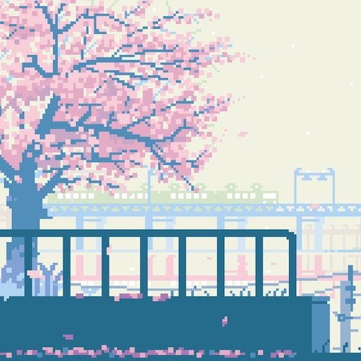

Anime Recommendations For You aka My Favourite Animes, Please Watch Them Or I Will Cry On Your Favourite Shirt
Here are anime recommendations from me, because I like anime, and I know there are people like myself who need more animes to watch but don't have an organized watchlist and have forgotten half of it, or maybe just want to try watching anime for the first time. Some of these are beginner animes, some are not. There will be a variety of genres, or at least I hope so. I don't watch a lot of different genres. I guess I'll just organize them by genre. Side note, I haven't actually watched all of these because I keep rewatching my favourites. Some are forever condemned to rot in my watchlist...
